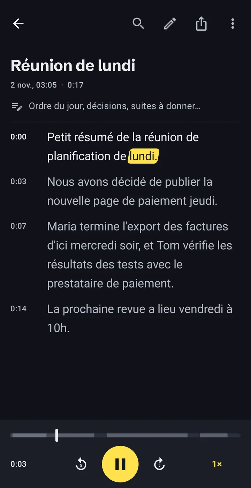
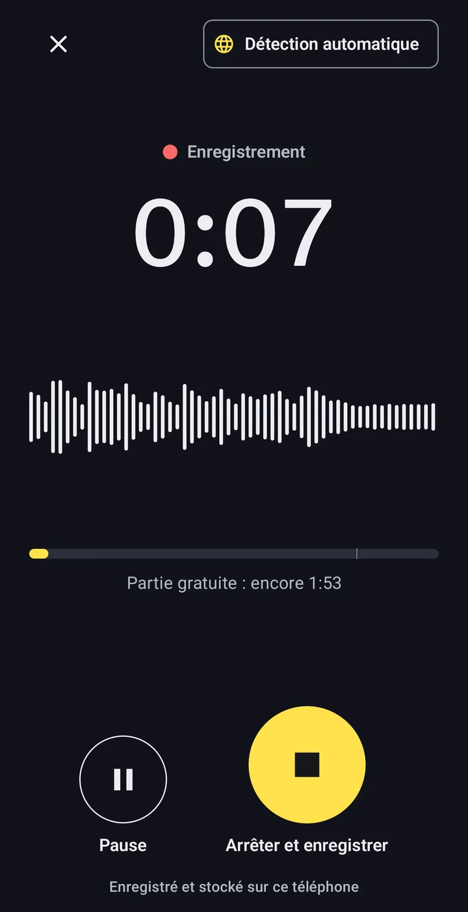
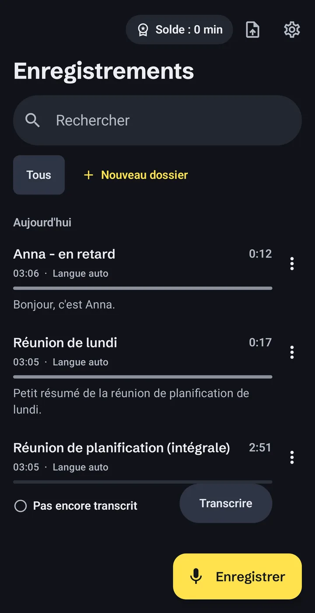
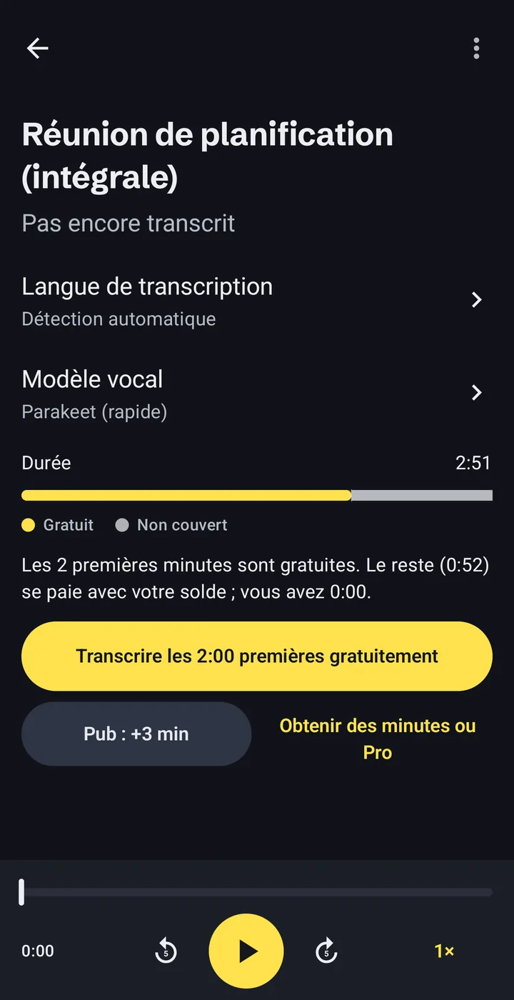

Transcription audio en texte, sans rien envoyer
Offline Audio Transcriber transforme notes vocales, cours, interviews et fichiers MP3 ou vidéo en texte, directement sur votre téléphone Android. Sans compte, sans envoi, et sans internet une fois le modèle vocal installé.
- Compte
- Inutile
- Modèle vocal
- 671 Mo, téléchargé une fois
- Gratuit
- 2 min de chaque enregistrement

Comment fonctionne la transcription hors ligne
Trois étapes, toutes sur le téléphone. Seul le modèle vocal se télécharge, une seule fois.
-
Enregistrez, ou ouvrez un fichier existant
Utilisez l’enregistreur intégré ou importez des fichiers audio et vidéo, y compris des messages vocaux enregistrés depuis une messagerie.
- MP3
- M4A
- WAV
- OGG
- MP4
- et d’autres fichiers audio et vidéo

-
Le téléphone transcrit lui-même
Le modèle vocal tourne sur le processeur du téléphone : le son ne quitte jamais l’appareil. Les longs fichiers continuent en arrière-plan, avec la progression dans une notification.
Enregistrement d’une heure60:00Durée de la transcription~8:00Notre propre test sur un Samsung Galaxy S23 Ultra. Les téléphones plus anciens ou moins chers sont plus lents. -
Lisez, corrigez, exportez
La transcription est horodatée et suit le son pendant la lecture. Touchez un mot pour aller à ce moment, corrigez les erreurs, cherchez dans le texte et rangez vos enregistrements dans des dossiers.
- TXT
- SRT
- VTT
- Copier
- Partager

Ce qui reste sur le téléphone, et les trois cas où l’app se connecte
Pas de compte, pas de serveur à nous. Chaque point ci-dessous figure aussi dans la politique de confidentialité.
Reste sur le téléphone
- Vos enregistrements et fichiers importés
- Les transcriptions et vos corrections
- Notes, dossiers et recherche
Passe par internet, et pourquoi
- Modèle
Le téléchargement du modèle vocal, une fois.Depuis huggingface.co et github.com.
- Pubs
L’affichage des publicités, dont celle, facultative, qui ajoute 5 minutes.Google AdMob. Dans l’EEE, au Royaume-Uni et en Suisse, vous choisissez dans le formulaire de consentement de Google.
- Achats
L’achat de packs de minutes ou de Pro.Google Play. Nous ne voyons jamais vos données de paiement.
Aucune analyse d’audience, aucun rapport de plantage, aucune vente de données. Détails dans la politique de confidentialité.
L’audio en texte dans 24 langues européennes
La reconnaissance vocale comprend ces langues :
- allemand
- anglais
- bulgare
- croate
- danois
- espagnol
- estonien
- finnois
- français
- grec
- hongrois
- italien
- letton
- lituanien
- maltais
- néerlandais
- polonais
- portugais
- roumain
- slovaque
- slovène
- suédois
- tchèque
- ukrainien
Un second modèle facultatif ajoute d’autres langues. Il tourne aussi sur le téléphone, plus lentement.
Ce que ça coûte, avant de commencer
L’installation est gratuite. Vous ne payez que les minutes au-delà de la partie gratuite, et vous voyez ce qu’il faut pour un enregistrement avant de le transcrire.
0:00–2:00Gratuit : les 2 premières minutes de chaque enregistrement.
2:00–10:00Vos minutes : gagnées avec de courtes pubs ou achetées en packs.
Avec Pro, tout l’enregistrement est couvert, quelle que soit sa durée.
- Partie gratuite
- Les 2 premières minutes de chaque enregistrement. Sans publicité.
- Une courte pub
- Une pub regardée ajoute 5 minutes. Si elle ne se charge pas, rien n’est bloqué.
- Packs de minutes
- 60, 180 ou 600 minutes. Ils n’expirent jamais.
- Pro
- Minutes illimitées. Au mois, à l’année ou en achat unique.
Google Play affiche les prix dans votre devise avant que vous confirmiez. Les abonnements se renouvellent jusqu’à leur résiliation dans Google Play. Si un enregistrement demande plus de minutes que vous n’en avez, l’app transcrit la partie gratuite et indique exactement combien de minutes manquent.

Les questions qu’on pose d’abord
Mes enregistrements sont-ils envoyés quelque part ?
Non. Enregistrements, transcriptions et notes restent dans le stockage privé de l’app sur votre téléphone. L’app ne se connecte que pour télécharger le modèle vocal, afficher des publicités et gérer les achats via Google Play.
Est-ce que ça marche sans internet ?
Oui, une fois le modèle vocal téléchargé. La transcription elle-même n’a pas besoin de connexion. Regarder une pub pour des minutes en plus et acheter en ont besoin.
Combien de temps prend la transcription ?
Sur un Samsung Galaxy S23 Ultra, un enregistrement d’une heure a pris environ 8 minutes lors de notre test. Les téléphones plus anciens ou moins chers sont plus lents. Vous pouvez quitter l’app : le travail continue en arrière-plan.
Quelle est la précision ?
Elle dépend de l’audio : qualité du son, accents et bruit de fond. Nous ne publions pas de chiffres de précision. Vérifiez les transcriptions importantes avant de vous y fier ; chaque mot se corrige dans l’app en écoutant.
Qu’est-ce qui est gratuit, qu’est-ce qui est payant ?
Les 2 premières minutes de chaque enregistrement sont gratuites. Au-delà, regardez une courte pub (+5 minutes), achetez un pack de minutes qui n’expire jamais, ou passez à Pro pour des minutes illimitées.
Quelle taille fait le téléchargement ?
Le modèle vocal se télécharge une seule fois et pèse 671 Mo. L’app affiche la taille avant de commencer. Avec un forfait limité, utilisez le Wi-Fi.
Comment supprimer mes données ?
Supprimez les enregistrements dans l’app, ou désinstallez-la pour effacer tout ce qu’elle a stocké. Les modèles vocaux se suppriment dans les Réglages.
Essayez-la sur votre prochain enregistrement
Aucun compte à créer. Les 2 premières minutes de chaque enregistrement sont gratuites.